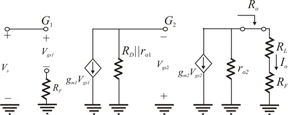

Find the open-loop gain.

From Figure 1, input voltage  is,
is,
The gate to source voltage of transistor  is,
is,
Substitute for .
Write the expression for output current.
Substitute for .
Refer to circuit diagram of feedback trans-conductance amplifier in Figure 10.10(c) in the textbook.
Draw the equivalent circuit..

Figure 1
Find the open-loop gain.
From Figure 1, input voltage is,
The gate to source voltage of transistor is,
Substitute for .
Write the expression for output current.
Substitute for .
Define the open loop gain.
Substitute for .
Usually
Thus, the open loop gain of the amplifier  is .
is .
Define the feedback factor.
 From Figure 1, the feedback factor is,
From Figure 1, the feedback factor is,
Closed loop gain  is,
is,

Substitute  for
for  and
and  for
for .
.
.
Thus, closed loop gain of the amplifier  is .
is .
The output resistance  is,
is,
Neglect the resistances,  and
and  in the circuit
in the circuit
To obtain note that the series connection at the output raises the output resistance. Thus,
The output resistance of the closed loop  is .
is .
Trans-conductance of transistor  and
and  are .
are .
Output resistancedrain resistance
Feedback resistance
Load resistance
Gain of the closed loop  is .
is .
The output resistance  is,
is,
Substitute corresponding values.
Thus, the output resistance  is .
is .